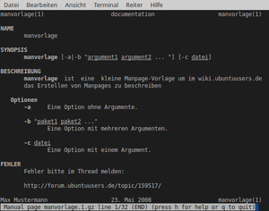

Manpage erstellen
Dieser Artikel wurde für die folgenden Ubuntu-Versionen getestet:
Ubuntu 14.04 Trusty Tahr
Zum Verständnis dieses Artikels sind folgende Seiten hilfreich:
Die Handbuchseite („manpage“) ist eine weit verbreitete Form der Dokumentation auf Unix-artigen Systemen. Sie wird als Textdatei im GNU roff-Format erstellt und als komprimierte .gz-Datei dem Benutzer zur Verfügung gestellt.
Manpages können aus anderen Formaten, wie beispielsweise Info-Seiten erzeugt werden, was in diesem Artikel aber nicht beschrieben ist. Dieser Artikel beschreibt die Grundlagen zum direkten Erstellen von Manpages, also die nötigen Werkzeuge, die Struktur und das Markup.
Programme¶
 mit
mit Benutzung/Konfiguration¶
Die Bedienung von gmanedit kann über die Menü- oder Werkzeug-Leiste erfolgen und ist selbsterklärend, wenn man die grundsätzliche Struktur einer Manpage verstanden hat.
Struktur einer Manpage¶
Header¶
Gewöhnlich beginnt eine Manpage mit Kommentaren, beispielsweise einem Lizenzhinweis. Darauf folgt der Header.
Allgemein sieht der Header wie folgt aus:
1 | .TH "Befehl" "Manpage-Bereich" "Version" "Autor" "section" |
im konkreten Fall ergibt das beispielsweise:
1 | .TH "manvorlage" "1" "23. Mai 2008" "Max Mustermann" "documentation" |
Sektionen¶
Auf den Header folgen die einzelnen Sektionen. Je ausführlicher eine Hilfeseite ist bzw. je umfangreicher das beschriebene Programm ist, um so mehr Sektionen und Untersektionen werden sinnvollerweise genutzt.
Der übliche Aufbau einer Sektion sieht wie folgt aus:
1 2 3 | .SH
NAME
manvorlage
|
Übliche Sektionen sind u.a. NAME, SYNTAX, BESCHREIBUNG, OPTIONEN, DATEIEN, SIEHE AUCH, FEHLER, und AUTOR (im Englischen NAME, SYNOPSYS, DESCRIPTION, OPTIONS, FILES, SEE ALSO, BUGS und AUTHOR).
Um die vollständige Struktur einer Manpage zu betrachten, bietet es sich an verschiedene auf dem eigenen System bereits vorhandene Seiten im Quelltext zu betrachten, ein guter Ausgangspunkt ist sicherlich die Manpage zu man.
Speicherorte¶
Üblicherweise werden englische Hilfeseiten unter usr/share/man/man1 (aus Debian-Paket) bzw. usr/local/share/man/man1 (andere Installtions-Methoden) abgelegt. Die deutschen Seiten liegen analog unter usr/share/man/de/man1 bzw. usr/local/share/man/de/man1.
Markup¶
Hier wird nur das nötigste Markup vorgestellt, um eine Manpage zu erstellen. Die vollständigen Formatierungs-Möglichkeiten des groff-Format sind in der Manual Page man(7) enthalten.
|  |
Beispiel: manvorlage.1.gz  |
| Markup | Zweck |
\fB | Anfang Textformatierung "fettdruck" |
\fI | Anfang Textformatierung "unterstrichen" |
\fR | Beendet die Textformatierung |
<br> | Zeilenumbruch |
& | Kaufmännisches Und (&) |
< | Kleiner-Als (<) |
> | Größer-Als (>) |
.LP | Linksbündiger Absatz |
.RP | Rechtsbündiger Absatz |
.IP | Zentrierter Absatz |
.TH | Header |
.SH | Sektion |
.SS | Unter-Sektion |
.TP | Listenpunkt |

- Erstellt mit Inyoka
-
 2004 – 2017 ubuntuusers.de • Einige Rechte vorbehalten
2004 – 2017 ubuntuusers.de • Einige Rechte vorbehalten
Lizenz • Kontakt • Datenschutz • Impressum • Serverstatus -
Serverhousing gespendet von